BY: JOCELYN CERVANTES
Here you'll find my memories from this year represented through glitch art because thats what 2020 was to me, one big glitch that doesn't feel real. The harsher the glitch the less I remember, the clearer the image the more prevelent it is in my mind. I also added a song for each image to embody the energy of the month, along with a review of the month. Below is a link to a spotify playlist that has all these songs in order so you can follow along if you wish. I hope you enjoy my timeline :').
spotify playlist link: 💌
JANUARY
What Dreams are Made of by: Evann McIntosh
“Priorities stacked like Tetris, But you come first”
I should've known 2020 was bad when I started this year off with a mistake. Oh well, you live and you learn and I know now. I spent my new years in Mexico. This song reminds me of the beach there, coming home to cold weather, butterflies in my stomach, parties, and bay area views at night. Many things I took for granted at the time like going to friends parties full of people, looking back I wish I could relive this month again. I was very hopeful, but hope can be a dangerous thing to carry around.
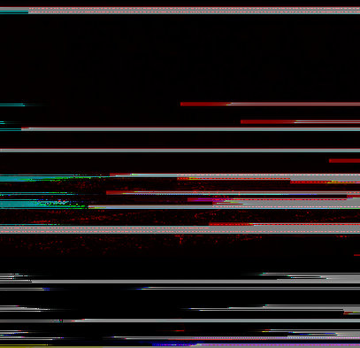
FEBUARY
Last Night by: Keyshia Cole ft. Diddy
“I tried to call but my pride wouldn't let me dial”
All this month brought me was disappointment. I try to forget about it but it's always in the back of my mind, finding a way to bother me. A semi-highlight was Valentine's day. Here I am with my friend, Evelynn. I have no other way I can focus on describing this month other than a fever dream I wish wasn't real..NEXT
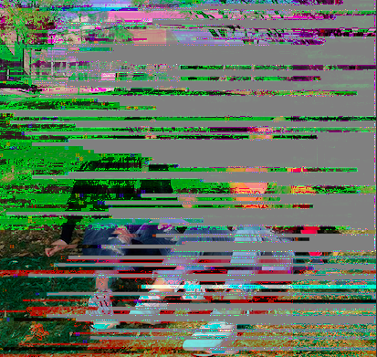
MARCH
Cinnamon Girl by: Lana Del Rey
"There's things I wanna say to you but I'll just let you live"
Lockdown vibesss where I really thought a global pandemic from one of history's deadliest viruses would be over in three weeks :). There was literally nothing to do was to sit at home and be sad, and so yeah that's exactly what I did. I made the whipped coffee, I did the Chole Ting workouts, and did a bunch of random baking to pass time. I still had too much time, I drew a porcupine on a cupcake because I was that bored.
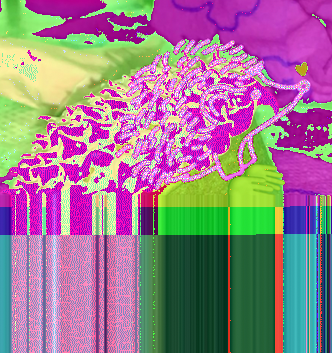
APRIL
Joyless by: Castlefeild
"Everything that you said so in trust will never mean a thing to anyone but me and I spent this year just trying to graduate"
Ahhhh lockdown got extended and we found out that we wouldn't be going back to school uhhaha. This month is also where I stopped talking to alot of people who I saw everyday because we never saw each other again after lockdown and I wouldn't go to class because I hated online school. Here I am, going to school…. Online. I remember dealing with a lot, trying to process life changing in every aspect. I’m glad I’ve grown enough for me to do the things I thought I would never be able to do.
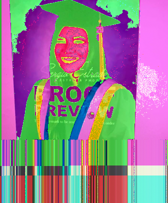
MAY
Absolute in Doubt by: Lil Peep ft. Wicca Phase Springs Eternal
“There's a silhouette inside, a lucid dream. I project myself on you, then back to me”
I was wrapping up my senior year and everything from here was a blur, this was where everyday seemed to be the same. I couldn’t believe that four years of working so hard to have fun at things like prom, senior nights, and graduations were just gone. All I wanted was for things to be normal again, so bad. I still do.
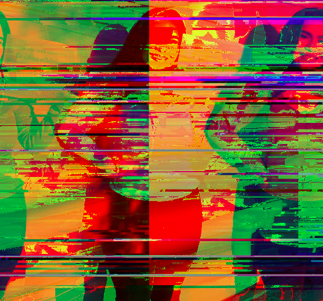
JUNE
Ribs by: Lorde
“This dream isn't feeling sweet. We're reeling through the midnight streets, and I've never felt more alone. It feels so scary, getting old”
I graduated this month!!!!! What's special to me is that my highschool still held individual ceremonies for all the seniors. They also let us choose a song to walk on the stage too and I chose this one. Once it was over and I came home, I was so petrified. Mostly because I didn’t wanna grow up I just wanted to be stupid and 17 forever. I wish I could tell myself it’s not as bad as I think it's gonna be.
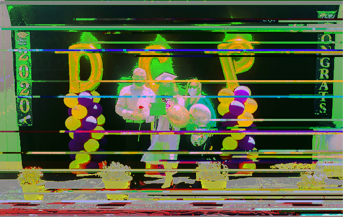
JULY
Be Nice To Me by: The Front Bottoms
“You say I'm changing. Sorry I didn't know I had to stay the same”
My birthhhh monnnthhhhhhhh hehe. I turned 18 and that was a crazy night, I spent it with 4 friends and even though it wasn't what I wanted, it was still memorable. Something I’ll never forget is that my dad got me a birthday cake with the name “Josie” instead of “Jocelyn” or even “Joc”. Never in my life have they ever called me Josie so????? Yes, he never will get to hear the end of that one.
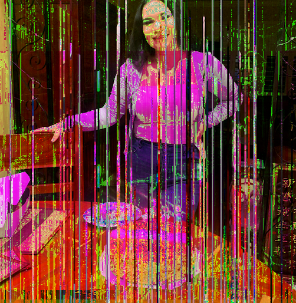
AUGUST
Good News by: Mac Miller
“Wake up to the moon, haven't seen the sun in a while but I heard that the skies still blue”
I felt like I wasn't ready for college and I was so scared I would have anxiety attacks and just lay awake all night thinking about how the first day of classes was coming closer and closer. My insomnia started acting up again and all I would do was sleep. I was so at pressure to change that I dyed my hair for the first time, so there's that. It was so ugly I'm so glad I bleached it again. Once again, I wish I could go back and tell myself that everything would be fine.
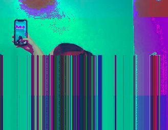
SEPTEMBER
Nothing Revealed/Everything Denied by: The 1975
“You can't live in denial, love. Settin' it right because if nothing is revealed, everything denied”
After months of quarantine again I finally saw some friends. That day in particular was one of the best this year because of how much I laughed. For a few hours I forgot about everything that was going on and everything bad that had happened. I forgot about all the weight I've been holding on from the beginning of the year. I finally started to forget things, to erase things if you will.
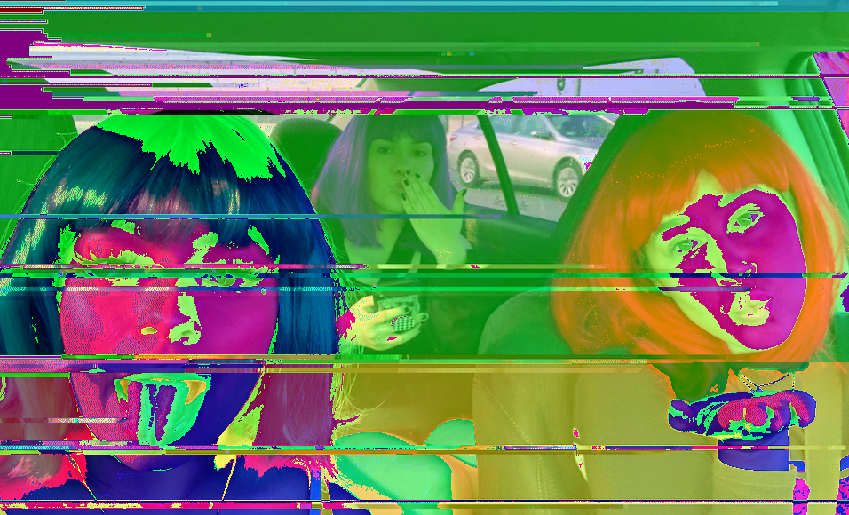
OCTOBER
The Dream Synopsis by: The Last Shadow Puppets ft. Alex Turner and Miles Kane
“Isn't it ugly when I talk about my visions of the past and possible future? shoot through my mind and I can't let go, inseparable opposing images”
This month I kept thinking about the past, especially when I listened to this song. Something about just being so blissfully ignorant as I was a year ago is just a feeling that I miss. However living like I do know, the way I think, I would never want to go back. All I can enjoy is the people I have now, and the people that I'm going to meet in the future.
< 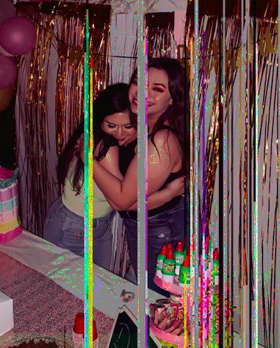
NOVEMBER
Fine, Great by: Modern Baseball
“I hate having to think about my future, When all I wanna do is worry about everyone but me”
This month I really focused on my interests of self improvement. WHICH IS SOMETHING I NEVER DO I DON'T KNOW WHY. Putting my energy into something positive brings me peace. So heres my crystal collection :'). Anywayssss call me what you want but you can’t call me unemployed because I got a joooobbbb hehe. Was it the right move to put myself in a high risk area for covid? You know, No but also I need money so yin yang you know? I actually genuinely love my job because I get to tell people what to buy and talk about skin/hair care and makeup all day.
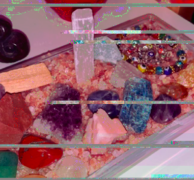
DECEMBER
Hell or High Water by: The Neighborhood
“I went through hell to get to high water and now I'm tryin' not to drown. Each time I fail it makes me try harder. I'll reach the stars next time around.”
I never take the time to ackowledge how far I've come. After all that happened this year, not only to me but to everyone, to the world- I think taking time to appreciate how far I’ve, you’ve, we’ve come is necessary. We lived through the worst and now it can only get better and if it doesn’t, at least we're stronger then we were before 2020. Here's a picture from the first day in 2020 where I actually felt like I was real. Thank you.
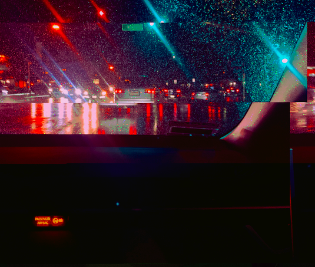